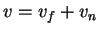

In deriving the solutions for the horizontal velocity
components (7.13) and
vapour mass fraction and temperature (7.16), no
reference was made to the shape of the section, since the
solutions satisfy the boundary conditions (7.1),
(7.2) and (7.5)
for all  and
and  . Thus the problem for a general
section can be written:
. Thus the problem for a general
section can be written:
Find  in, the domain, where
and
satisfy (7.19) and (7.20), respectively, in